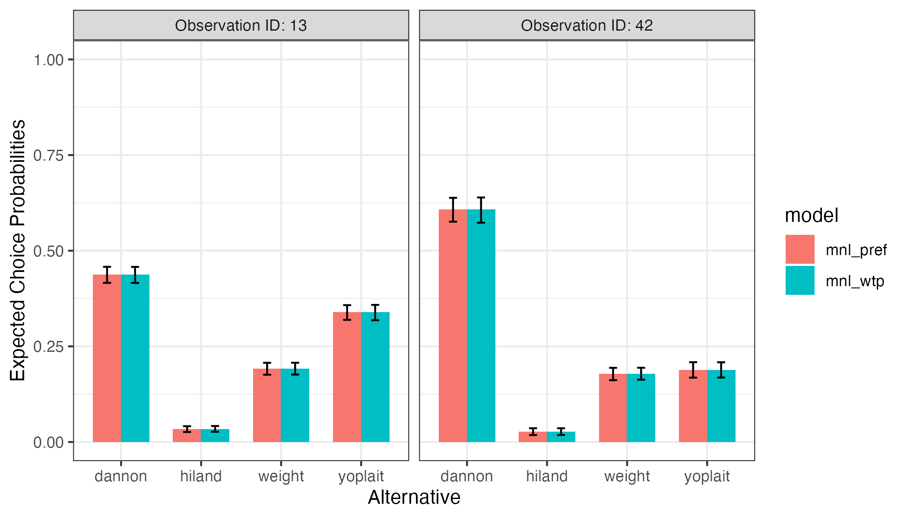

vignettes/predict.Rmd
predict.RmdOnce a model has been estimated, it can be used to predict
probabilities and / or outcomes for a set of alternatives. This vignette
demonstrates examples of how to so using the predict()
method along with an estimated model.
You can make predictions for any set of alternatives, so long as the
columns in the alternatives correspond to estimated coefficients in your
model. By default, if no new data are provided via the
newdata argument, then predictions will be made for the
original data used to estimate the model.
Predictions can be made using both preference space and WTP space models, as well as multinomial logit and mixed logit models. For mixed logit models, heterogeneity is modeled by simulating draws from the population estimates of the estimated model.
In the example below, a preference space MNL model is estimated
(mnl_pref) and then used to predict probabilities for the
data used to estimate the model:
library("logitr")
mnl_pref <- logitr(
data = yogurt,
outcome = 'choice',
obsID = 'obsID',
pars = c('price', 'feat', 'brand')
)
probs <- predict(mnl_pref)
head(probs)
#> obsID predicted_prob
#> 1 1 0.41802407
#> 2 1 0.02118240
#> 3 1 0.23691737
#> 4 1 0.32387615
#> 5 2 0.26643822
#> 6 2 0.02255486The predict() method returns a data frame containing the
observation ID as well as the predicted probabilities. The original data
can also be returned in the data frame by setting
returnData = TRUE:
probs <- predict(mnl_pref, returnData = TRUE)
head(probs)
#> obsID predicted_prob price feat brandhiland brandweight brandyoplait choice
#> 1 1 0.41802407 8.1 0 0 0 0 0
#> 2 1 0.02118240 6.1 0 1 0 0 0
#> 3 1 0.23691737 7.9 0 0 1 0 1
#> 4 1 0.32387615 10.8 0 0 0 1 0
#> 5 2 0.26643822 9.8 0 0 0 0 1
#> 6 2 0.02255486 6.4 0 1 0 0 0To make predictions for a new set of alternatives, use the
newdata argument. The example below makes predictions for
just two of the choice observations from the yogurt
dataset:
data <- subset(
yogurt, obsID %in% c(42, 13),
select = c('obsID', 'alt', 'price', 'feat', 'brand'))
probs_mnl_pref <- predict(
mnl_pref,
newdata = data,
obsID = "obsID"
)
probs_mnl_pref
#> obsID predicted_prob
#> 49 13 0.43685145
#> 50 13 0.03312986
#> 51 13 0.19155548
#> 52 13 0.33846321
#> 165 42 0.60764778
#> 166 42 0.02602007
#> 167 42 0.17803313
#> 168 42 0.18829902Upper and lower bounds of a confidence interval for predicted
probabilities can be obtained by setting
interval = "confidence", and the tolerance level (0 to 1)
is set with the level argument (defaults to 0.95).
Intervals are estimated using the Krinsky and Robb parametric
bootstrapping method (Krinsky and Robb
1986). For example, a 95% CI is obtained with the following:
probs_mnl_pref <- predict(
mnl_pref,
newdata = data,
obsID = "obsID",
interval = "confidence",
level = 0.95
)
probs_mnl_pref
#> obsID predicted_prob predicted_prob_lower predicted_prob_upper
#> 49 13 0.43685145 0.41531882 0.45781528
#> 50 13 0.03312986 0.02641062 0.04145166
#> 51 13 0.19155548 0.17631579 0.20767134
#> 52 13 0.33846321 0.31843584 0.35880858
#> 165 42 0.60764778 0.57215830 0.64005061
#> 166 42 0.02602007 0.01839510 0.03687359
#> 167 42 0.17803313 0.16214868 0.19488167
#> 168 42 0.18829902 0.16837249 0.20967085WTP space models can also be used to predict probabilities. In the
example below, a WTP space model is estimated and used to predict
probabilities for the same data data frame as in the
previous examples:
mnl_wtp <- logitr(
data = yogurt,
outcome = 'choice',
obsID = 'obsID',
pars = c('feat', 'brand'),
scalePar = 'price',
numMultiStarts = 10
)
probs_mnl_wtp <- predict(
mnl_wtp,
newdata = data,
obsID = "obsID",
interval = "confidence"
)
probs_mnl_wtp
#> obsID predicted_prob predicted_prob_lower predicted_prob_upper
#> 49 13 0.43686141 0.41551327 0.45747039
#> 50 13 0.03312947 0.02641714 0.04231684
#> 51 13 0.19154829 0.17587927 0.20730602
#> 52 13 0.33846083 0.31857077 0.35854611
#> 165 42 0.60767120 0.57326014 0.63983775
#> 166 42 0.02601800 0.01853595 0.03664343
#> 167 42 0.17802363 0.16178241 0.19419803
#> 168 42 0.18828717 0.16779265 0.20839887Here is a bar chart comparing the predicted probabilities from the preference space and WTP space models. Since both models are equivalent except in different spaces, the predicted probabilities are identical:
library("ggplot2")
probs <- rbind(probs_mnl_pref, probs_mnl_wtp)
probs$model <- c(rep("mnl_pref", 8), rep("mnl_wtp", 8))
probs$alt <- rep(c("dannon", "hiland", "weight", "yoplait"), 4)
probs$obs <- paste0("Observation ID: ", probs$obsID)
ggplot(probs, aes(x = alt, y = predicted_prob, fill = model)) +
geom_bar(stat = 'identity', width = 0.7, position = "dodge") +
geom_errorbar(aes(ymin = predicted_prob_lower, ymax = predicted_prob_upper),
width = 0.2, position = position_dodge(width = 0.7)) +
facet_wrap(vars(obs)) +
scale_y_continuous(limits = c(0, 1)) +
labs(x = 'Alternative', y = 'Expected Choice Probabilities') +
theme_bw()
The predict() method can also be used to predict
outcomes by setting type = "outcome" (the default is
"prob" for predicting probabilities). In the examples
below, outcomes are predicted using the same preference space and WTP
space models as in the previous examples. The returnData
argument is also set to TRUE so that the predicted outcomes
can be compared to the actual choices made:
outcomes_pref <- predict(
mnl_pref,
type = "outcome",
returnData = TRUE
)
head(outcomes_pref)
#> obsID predicted_outcome price feat brandhiland brandweight brandyoplait
#> 1 1 0 8.1 0 0 0 0
#> 2 1 0 6.1 0 1 0 0
#> 3 1 1 7.9 0 0 1 0
#> 4 1 0 10.8 0 0 0 1
#> 5 2 1 9.8 0 0 0 0
#> 6 2 0 6.4 0 1 0 0
#> choice
#> 1 0
#> 2 0
#> 3 1
#> 4 0
#> 5 1
#> 6 0
outcomes_wtp <- predict(
mnl_wtp,
type = "outcome",
returnData = TRUE
)
head(outcomes_wtp)
#> obsID predicted_outcome feat brandhiland brandweight brandyoplait scalePar
#> 1 1 1 0 0 0 0 8.1
#> 2 1 0 0 1 0 0 6.1
#> 3 1 0 0 0 1 0 7.9
#> 4 1 0 0 0 0 1 10.8
#> 5 2 1 0 0 0 0 9.8
#> 6 2 0 0 1 0 0 6.4
#> choice
#> 1 0
#> 2 0
#> 3 1
#> 4 0
#> 5 1
#> 6 0The accuracy of each model can be computed by dividing the number of correctly predicted choices by the total number of choices:
chosen_pref <- subset(outcomes_pref, choice == 1)
chosen_pref$correct <- chosen_pref$choice == chosen_pref$predicted_outcome
accuracy_pref <- sum(chosen_pref$correct) / nrow(chosen_pref)
accuracy_pref
#> [1] 0.3909619
chosen_wtp <- subset(outcomes_wtp, choice == 1)
chosen_wtp$correct <- chosen_wtp$choice == chosen_wtp$predicted_outcome
accuracy_wtp <- sum(chosen_wtp$correct) / nrow(chosen_wtp)
accuracy_wtp
#> [1] 0.356136These results show that both models correctly predicted choice for
approximately 39% of the observations in the yogurt data
frame, which is significantly better than random (25%).